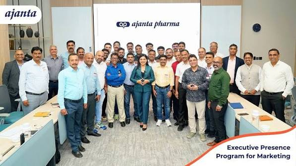

Quality & Compliance
Built for scrutiny. Designed for consistency.
A corporate quality hub for manufacturing standards, analytical controls, documentation and regulatory support.
Quality System
Every batch has a story. Every step needs a record.
A professional compliance portal should make it easy for customers and auditors to understand quality systems, documentation and responsible manufacturing practices.
GMP
Good manufacturing practice framework.
ISO
Quality management framework.
Quality Control
Analytical testing and release controls.

Regulatory
Documentation support for qualified markets.
Quality Workflow
Controls across the manufacturing lifecycle.

01
Incoming Materials
Material identity, documentation and qualification.
02
In-Process Control
Defined process parameters and monitoring.
03
Analytical Release
Testing against approved specifications.
04
Documentation
Traceable records supporting customer review.
Quality Control
Analytical discipline across every stage.
Replace with actual QC laboratory photography.